01 · MOBILE
시네: 루트
영화의 특성과 사용자의 취향을 분석해,
나에게 가장 잘 맞는 특별관을 추천하는 개인화 서비스
- 구분
- 서비스 UI 기획 및 개선 제안
- 기간
- 2026.08.03 – 08.26
- 역할
- UI, UX
- 기여도
- UI 55% · UX 50% · UX Research 50%
- Tool
- Figma · ChatGPT · Maze
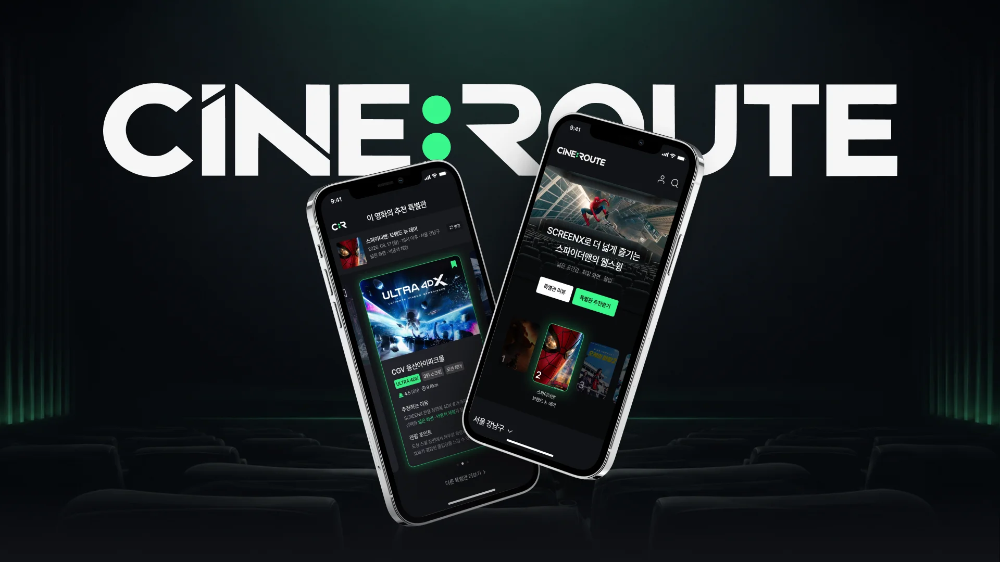
Background
회복하는 영화 시장 속, 특별관은 더 빠르게 성장하고 있어요
팬데믹 이후 극장 시장은 회복세를 보였지만, 매출은 여전히 팬데믹 이전 수준에는 미치지 못하고 있습니다. 이제 극장은 단순 관람을 넘어 대형 스크린, 고품질 음향, 체험형 상영 등 극장에서만 가능한 경험을 강화하고 있습니다.
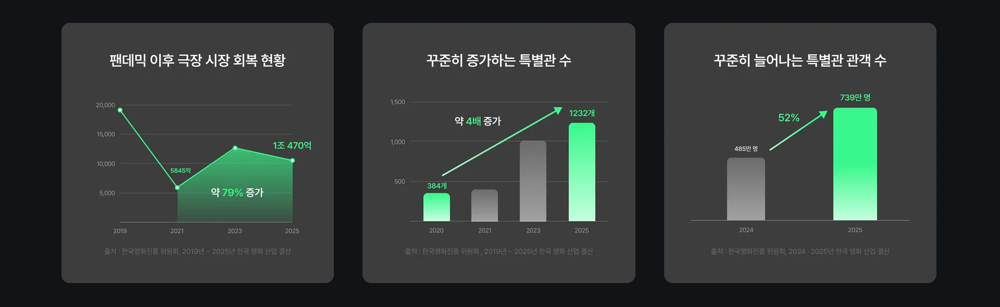
Survey
사용자는 영화의 특성과 자신의 상황에 맞는 특별관을 추천받고 싶어 했어요
설문 참여자들은 영화 상영 방식뿐 아니라 시설, 이동 거리, 상영 시간까지 여러 조건을 함께 고려했습니다. 하지만 특별관의 차이를 이해하기 어렵고 추천 기준도 사람마다 달라, 자신에게 맞는 특별관을 고르는 데 어려움을 느끼고 있었습니다.
- Response 총 74명
- Duration 2026.08.05 – 08.08
- Tool Google Forms
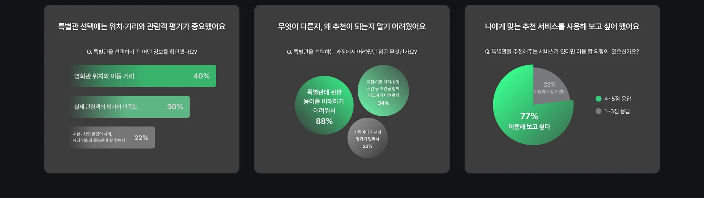
Hypothesis
특별관 선택이 어려운 사용자가 Who
영화와 관람 조건에 맞는 특별관을 추천받는다면 How
적합한 특별관을 빠르게 선택할 수 있을 것이다 What
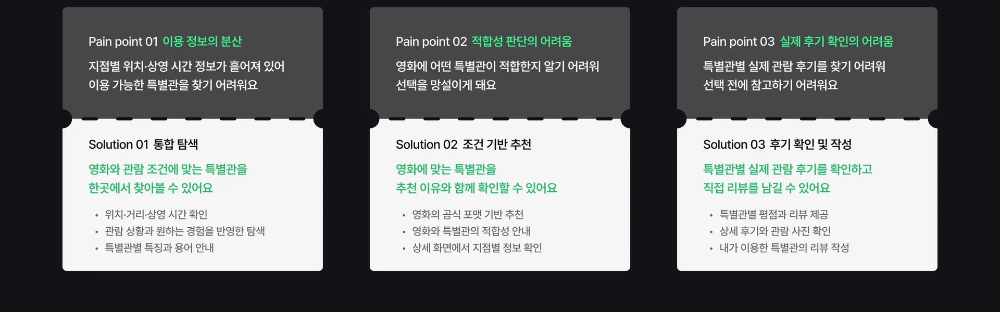
User Flow
영화·위치·시간 등 관람 조건을 입력하면 이용 가능한 특별관과 맞춤 추천 결과를 확인할 수 있습니다. 특별관별 특징과 추천 근거를 비교해 원하는 관을 선택하고, 상세 정보 확인 후 예매처로 이동합니다.
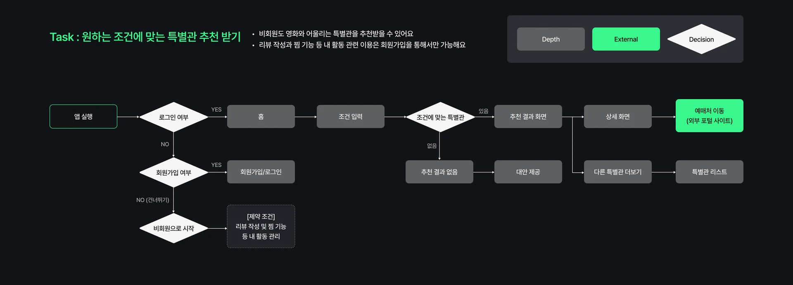
Design System
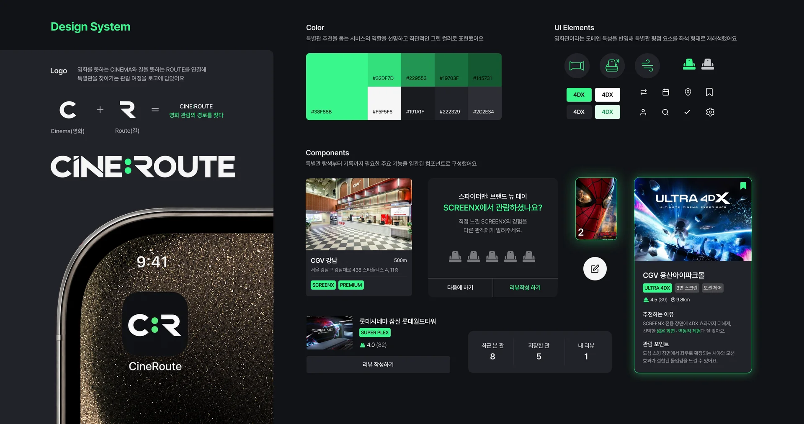
Usability Test
특별관을 추천받는 과정은 원활했지만, 경험을 남기는 과정은 어려웠어요
추천 결과의 이해도와 정보 충분성은 높았지만, 리뷰 작성 위치를 쉽게 찾지 못한 점이 핵심 개선 과제로 확인됐습니다.
- Response 총 28명
- Duration 2026.08.19 – 08.20
- Tool Maze
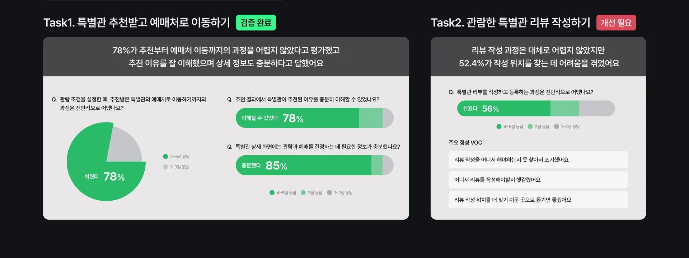
Improvement
리뷰 작성 진입점을 추가해 더 쉽게 찾고 시작할 수 있도록 했어요
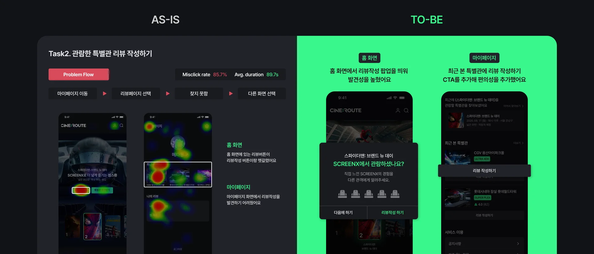
Solution
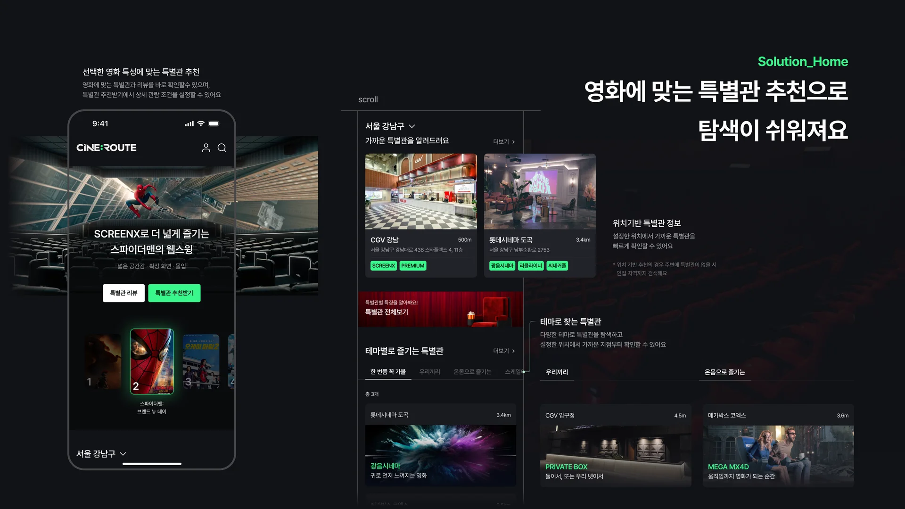
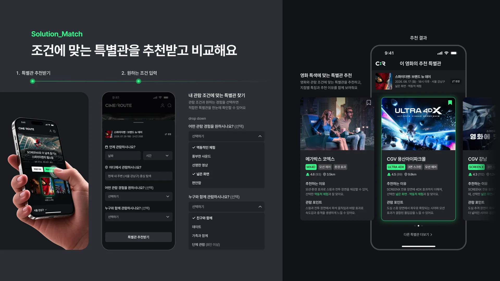
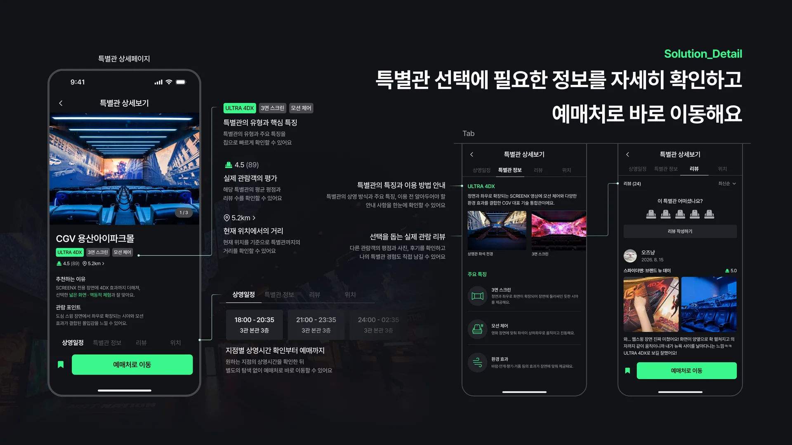
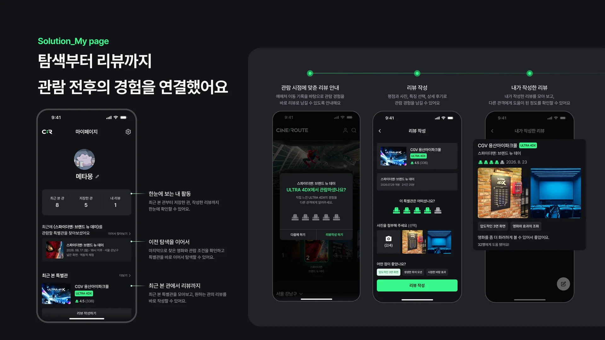
Thanks for watching!